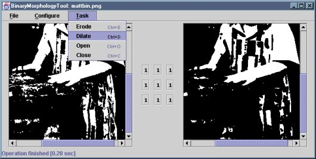

The BinaryMorphologyTool application displays a binary
image, a structuring element and the result of performing a morphological
operation on the image using that structuring element. The image filename
and structuring element dimensions are specified on the command line. If
the dimensions are omitted, a default of 3x3 is used.
A structuring element pixel value can be toggled from 0 to 1 and vice versa by clicking on that value. Structuring elements can be loaded and saved via the File menu. The current structuring element can be filled with ones or zeros via the Element menu. An operation is performed by selecting from the Operation menu.
The application consists of the source files
BinaryMorphologyTool.java,
StructElementPane.java and
StructElementValue.java.
The corresponding .class files are
BinaryMorphologyTool.class StructElementPane.class StructElementValue.class StructElementValue$1.class
These .class files have been packaged as a single JAR file,
BinaryMorphologyTool.jar. You can install the application by
copying this JAR file, along with either the MS-DOS batch file
BinaryMorphologyTool.bat or the bash shell script
BinaryMorphologyTool.sh, as appropriate. The batch file or
script should be edited to reflect the new location of the JAR file.